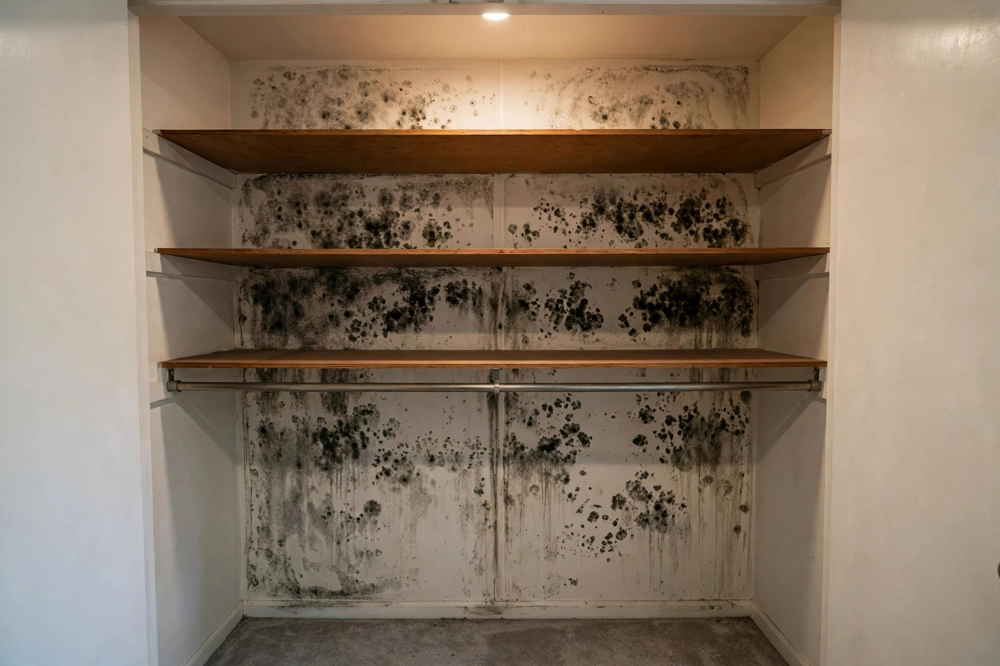
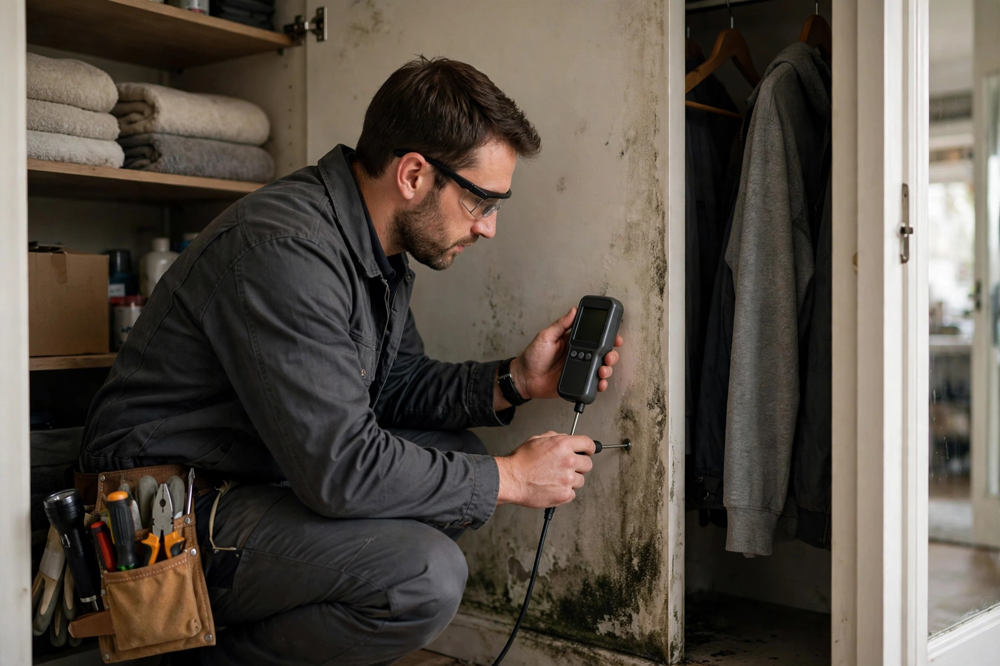

Home / Mold / Closet
Boise, Idaho · Small-space expertsCloset mold, gone for good
That musty smell when you open the closet door, the dark spots behind the shoes, the white film on leather goods — we clean it properly and fix the airflow problem that caused it, so you're not doing this again next year.

Closet mold questions
Why does mold grow in closets but nowhere else?
Closets trap still, humid air against cold exterior walls. Clothes block airflow, and the wall behind them stays cooler than the room — perfect condensation conditions. It's the most common single-room mold call we get.
Do I have to throw away clothes with mold on them?
Not always. Hard surfaces wipe clean; washable fabrics usually survive a hot wash. Porous items like shoes, bags, or suitcases with deep growth are harder to save — we'll tell you honestly item by item.
Will you need to remove the closet drywall?
Only if the growth goes through the paper or the wall reads wet deep inside. Surface growth on painted drywall often cleans off completely. We check with a moisture meter before deciding.
How do I stop it coming back in the same closet?
Airflow is the fix: louvered or undercut doors, don't pack clothes tight against exterior walls, keep the room's humidity down, and leave a few inches of space behind hanging garments so air can circulate freely around them. In chronic cases a small closet dehumidifier or a vent adjustment solves it.
Is closet mold dangerous?
Any indoor mold can bother sensitive people — the CDC notes mold exposure can cause nasal stuffiness, throat irritation, and coughing. Closets concentrate it in a small space you breathe in every morning, so it's worth handling properly.
Two closet types, two fixes
Not all closets are the same — the fix depends on which wall is growing the mold.
Closets on outside walls
These fight condensation. The fix is airflow and insulation: louvered doors, a gap behind clothes, and making sure the wall itself is insulated. Cleaning alone buys a few months.
Closets on inside walls
Interior closet mold usually means a plumbing leak in the shared wall or humidity migrating from an adjacent bathroom. Here we trace the moisture first — the closet is the symptom, not the source.
Before we start: the closet checklist
Here's what we verify on every closet job:
- Which wall is affected — exterior walls are the usual suspect.
- Moisture readings inside the wall, not just on the surface.
- Whether the growth is surface-only or through the drywall paper.
- Airflow: solid vs. louvered door, vent location, furniture blocking.
- What's stored in there — some items need special handling.

Why Boise closets grow mold
Tight new builds trap humidity
Harris Ranch and other newer southeast Boise builds are well-sealed for energy efficiency. That also means moisture from daily life stays inside longer — and closets, with no airflow, show it first.
Condensation on cold walls
In January and February, exterior closet walls run much colder than the room. Warm indoor air condenses on them behind hanging clothes, and mold follows in weeks.
Ground-floor closets on slabs
Closets on concrete slabs wick moisture up through the floor. The baseboard and lower drywall stay damp, especially in spring.
A master closet on an exterior wall
Consider a Harris Ranch townhome where the master bedroom closet shares two exterior walls. The homeowner packs winter coats tight against the back wall all summer. By October there's a musty smell and grey-green spotting behind the coats. The drywall reads dry inside the wall — it's surface condensation mold, not a leak. Cleaning plus a louvered door and a six-inch gap behind the clothes solves it permanently. The whole visit takes a couple of hours, and the closet is usable the same day. Background: CDC — Mold.
Smell something in the closet?
Tell us which closet and what you're seeing. We'll let you know if it sounds like surface mold you can handle or something that needs a pro — straight answer, no pitch.